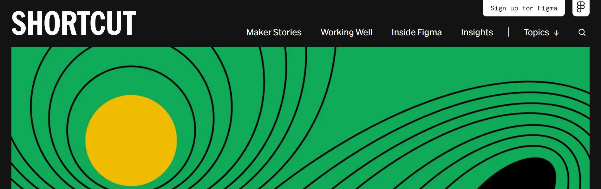
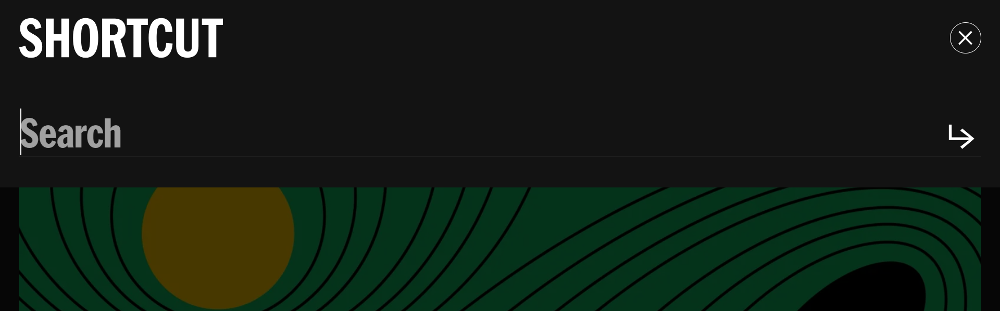

Triggers
- Hover on/off the Search button
- Click on the Search button
Rules
- When hover on: cursor turns into pointer
- When hover off: pointer turns back into cursor
- When click on:
- The whole header turns black (including Search button), except for "Shortcut" logo.
- A search bar with blinking cursor shows up below the logo and makes the nav bar bigger (no animation/transition).
- The search bar slightly jumps/moves (could be a bug/technical issue).
- A "close" button and an "Enter" button show up on the right side (no animation/transition).
- The color of rest of the screen is desaturated.
Feedback
- When hover on: cursor turns into pointer
- When hover off: pointer turns back into cursor
- When click on:
- The whole header turns black (including Search button), except for "Shortcut" logo.
- A search bar with blinking cursor shows up below the logo and makes the nav bar bigger (no animation/transition).
- The search bar slightly jumps/moves (could be a bug/technical issue).
- A "Close" button and an "Enter" button show up on the right side (no animation/transition).
- The color of rest of the screen is desaturated.
Loops & Modes
- No loops
- Modes: New elements show up
- A search bar with blinking cursor
- A "Close" button
- An "Enter" button

Before click on the Search button

After click on the Search button